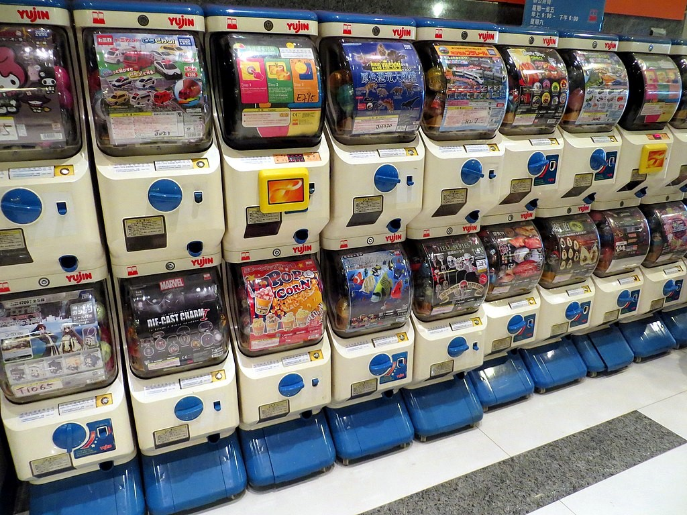
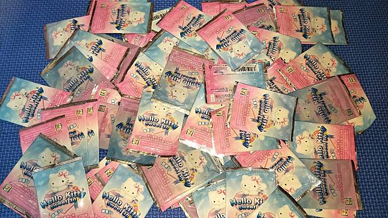
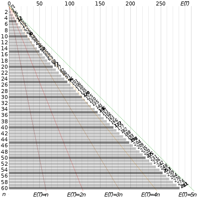
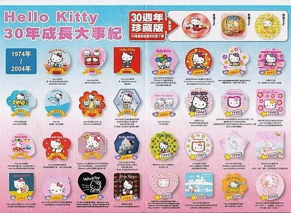
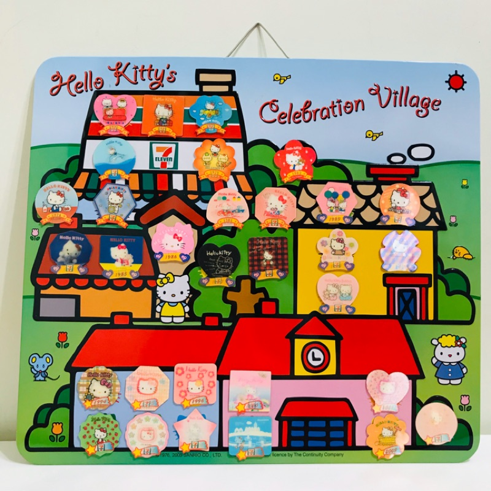
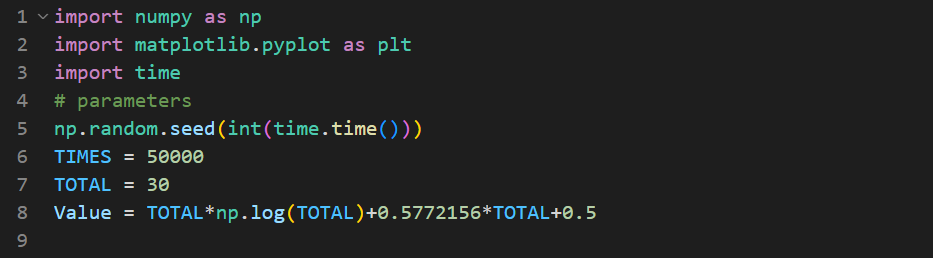
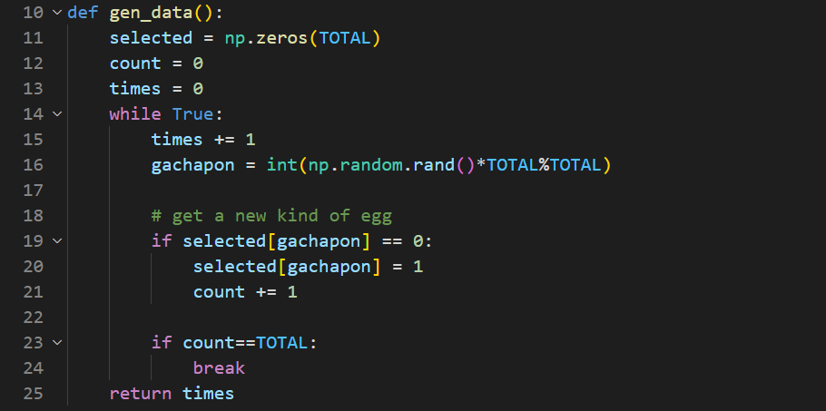
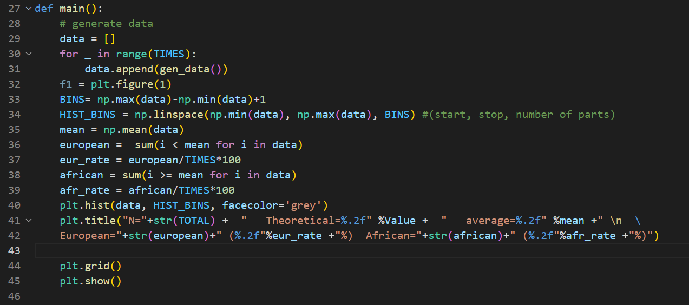
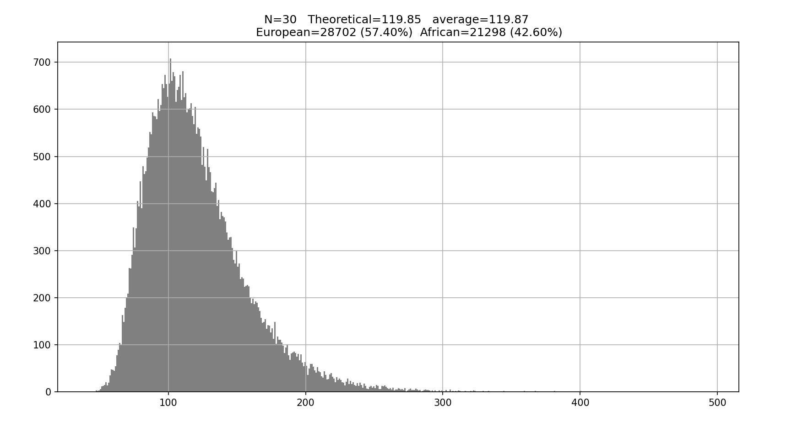

蒐集整組Hello Kitty磁鐵要多久? Coupon Collect Problem
Introdution
抽獎和轉蛋這種需要運氣的玩意對我這種總當慣分母的非洲人早已毫無動力，但奇怪的是，我這個人卻有收藏癖，看到可愛或是喜歡的轉蛋或是公仔無論代價都要蒐集整套，缺一不可！但是要
成功蒐集整套公仔卻不是一件容易的事情，往往一組8款的公仔卻要花上一二十抽才能湊齊，看來為了滿足收藏整套的成就感所費不貲啊！

令人期待又害怕受傷的Gachapon
最讓我印象深刻的就是2005年7-11推出的 30周年 Hello Kitty 磁鐵活動，只要消費滿77元就可以隨機獲得一款。那時候的我，每天晚上最期待的就是跟下班的爸爸要今天的戰利品，然而
每天就只能收穫一個(最多兩個)，然而要蒐集到不重複的整組實在是不容易的事，活動一久家裡就堆滿了一堆重複拿到的磁鐵，那時小學懵懂的我就有一個疑問：到底要多久才能收滿整組呢?

Hello Kitty磁鐵
但明明每一款抽中的機率都是相同的，而且沒有特別款或隱藏版這種低機率的公仔，都必須要花上好幾抽才能湊齊整套，那我們是不是能再抽轉蛋前，先估算一下大約平均要幾抽才能完成”全套”
這個不容易的任務呢?
Prior knowledge: Math
The Coupon Collector Problem
而這個抽轉蛋湊齊整套的問題，就是所謂Coupon collector Problem(彩卷收集問題)，在機率論中是十分經典著名且生活化的問題。而這個問題可以一般化成以下的描述：
給定一款有$N$種彩卷的遊戲，在不能交換的條件下要蒐集多少張彩卷，才能湊齊全部$N$種彩卷的期望值為多少呢?
事實上經過簡單的數學推導，我們可以證明對於$N$種彩卷，湊齊整套彩卷所需的數量約為。
\begin{aligned}
E(N)= & N \ln N+\gamma N+1 / 2 \\
& \gamma \sim 0.577
\end{aligned}
也就是說Coupon collector Problem的複雜度約為$O(NlnN)$，也因此前文所提到一組$8$款公仔的轉蛋在隨機的狀態下大約要
\[E(8)=8 \ln 8+0.577 \times 8+1 / 2=21.75\]
即根據機率理論來說需要大約21抽才能湊齊整套，而這個數值也與我們生活中的經驗十分接近。那現在我們來用數學推導證明這個Coupon collector Problem的公式吧！
Math of Coupon Collect Problem
那這個問題的推導十分的簡單，現在假設我們要湊齊一款$N$種公仔的轉蛋，要計算湊齊整套公仔所需次數的期望值，就是把”每抽”能”抽到新的公仔的期望值”全部”加起來”。舉例
來說，要湊齊一款$3$種公仔的轉蛋，則湊齊整組的期望值等於
\[E(3)=E(\text { first kind })+E(\text { second kind })+E(\text { thrid kind })\]
或是我寫成
\[E(3)=E_1(3)+E_2(3)+E_3(3)\]
那我們現在思考抽到第一款所需的期望值為何：因為目前手中一個公仔都沒有，所以要抽到一個從未拿過的公仔所需的期望值次數就是$1$
\[E_1(3)=1\]
那抽取第二款所需的期望值為多少呢? 因為目前手中一經有一款公仔了，剩下兩種公仔對目前的自己來說是新的，因此我們抽到全新的公仔的機率就是$p_2=2/3$，而期望值$E_2$則
為$p_2$的倒數
\[E_2(3)=\frac{1}{p_2}=\frac{3}{2}\]
同理抽取第三款(最後一款)公仔的期望值，就是在剩下三種當中選到一種，機率$p_3=1/3$，而期望值$E_3$為$p_3$的倒數
\[E_3(3)=\frac{1}{p_3}=\frac{3}{1}\]
因此
\begin{aligned}
E(3) & =E_1(3)+E_2(3)+E_3(3) \\
& =\frac{1}{p_1}+\frac{1}{p_2}+\frac{1}{p_3} \\
& =1+\frac{3}{2}+\frac{3}{1}=5.5
\end{aligned}
在理解$n=3$的case後，我們來一般化$n=N$的情形，對於$E(N)$其實就是每一抽抽到新的所需的期望值(機率倒數)的加總
\[E(N)=\sum_{i=1}^N \frac{1}{p_i}=\frac{1}{p_1}+\frac{1}{p_2}+\cdots+\frac{1}{p_N}\]
現在我們的工作就是要找出每個機率 $p_i,i=1,2,…,N$。
\[p_i=?\]
對於手上已經有$N$種公仔當中的$i-1$種，現在要執行抽出第$i$種不重複的公仔，所需的機率即為$p_i$。而此機率也十分簡單，因為手上已經有$i-1$種公仔了，轉蛋機裡有$N-(i-1)$種目前
不重複的公仔，因此抽出不重複公仔的機率就是在N種當中抽出$n-(i-1)$種目前不重複的，因此
\[p_i=\frac{N-(i-1)}{N}=\frac{N+1-i}{N}\]
所以
\begin{aligned}
E(N) & =\sum_{i=1}^N \frac{1}{p_i}=\sum_{i=1}^N \frac{N}{N+1-i} \\
& =N \sum_{i=1}^N \frac{1}{N+1-i} \\
& =N\left(\frac{1}{N}+\frac{1}{N-1}+\cdots+\frac{1}{2}+\frac{1}{1}\right) \\
& =N \times H_N
\end{aligned}
其中的$H_N$是到第$N$項的調和即數和，而根據微積分我們知道調和級數為發散的，而根據Taylor expansion搭配近似我們可以得到
\begin{aligned}
& H_N \sim \ln N+\gamma+\frac{1}{2 N} \\
& \gamma=0.577 \\
\end{aligned}
也因此
\begin{aligned}
E(N) & =N \times H_N=N\left(\ln N+\gamma+\frac{1}{2 N}\right) \\
& =N \ln N+\gamma N+\frac{1}{2}
\end{aligned}
對於這樣的結果，我們可以把$N$帶入，得到要湊齊一款$N$種公仔所需轉蛋次數的期望值(下表格)。

Differnet N in coupon collector formula
我們可以發現隨著想蒐集整套款式越龐大($N$越大)，所需花費轉蛋次數的倍率就越大
\[r= E(N)/N =\ln N+\gamma N+\frac{1}{2}\]
舉例來說$N=5$時
\[r_5= E(5)/5 =12/5=2.4\]
\[r_{15}= E(15)/5 =50/15=3.33\]
也就是說對於要湊齊一組$5$款的公仔，僅需花$2.4$倍的量就可以完成，而要湊齊一組$15$款公仔卻需要$3.33$倍的量才能
完成(倍數非定值)，而且隨著$N$越大，倍數越高。因此要湊齊一組$N=30$的7-11聯名的Hello Kitty 30周年磁鐵需要$120$次!

整套的Hello Kitty 有30種，以及3款隱藏版
可見這真的不是件容易的事情呢，可見20年前的7-11就想到這個邪惡的促銷方法(滿77元送一個磁鐵)，吸引了多少瘋狂的
消費者呢XD 。然而我家的冰箱上還真的有一組完整的$30$款，真是懷念小時候的毅力啊(直接暴露出自己的年紀了QQ)

當時7-11還很貼心推出收藏用的白板可以展示收藏呢(取自網路)
Simulation using python
然而時過境遷，我已經不是那個傻傻會被騙的消費者了，也從那個傻傻呆呆的小學生，成為充滿心機算計的大人了，現在我們再來測試驗證看看這個理論是否正確吧！
因為我沒有那麼多錢可以揮霍實測轉蛋機了(現在一抽都要50、100有夠幹貴==)，那就寫個code來模擬轉蛋機的情形吧！接下來利用python搭配亂數寫一個自動抽獎
的模擬器，並計算每一run湊齊整組所需的次數，最後統計成次數的分布圖。
首先我們先給定parameters

接著寫一個用亂數自動抽獎的機器，一開始先把一個大小跟種類$N=30$一樣的矩陣歸零。接著每一抽開始times+=1，接著gachapon可以從亂數得到一個介於$0~N$的數字，
即為轉蛋的結果。若是轉蛋對應的selected陣列為$0$代表是全新的東西，將對應陣列改成$1$後，並把目前所擁有的種類數count+=1。若是從gachapon得到的數字所對應
的selected矩陣為$1$代表重複抽到，則由迴圈繼續抽轉蛋(times+=1)，直到count==TOTAL就是我們的$N$$(30)$時，代表湊齊整組轉蛋，並回傳在這run所花費的抽數。

最後我們把要測幾次的次數TIMES丟到迴圈，讓這樣的轉蛋湊整組的過程重複TIMES次，同時將回傳所花費的次數統計下來做成直方圖，就可以得到所需轉蛋次數的分布
圖了。同時也可以計算出模擬結果的平均值(期望值)，是否與前面理論推導的公式相符(Theoretical)。然後我也做了一個歐洲人和非洲人的比例分布，歐洲人表示所
花費的次數小於平均值，非洲人則是次數大於平均值。

最後模擬的結果如下圖

首先我們可以發現從前面的公式算出的理論值約為119.85與模擬出來的平均值119.87十分接近。可見要湊齊整組30款的Hello Kitty磁鐵需要120抽！有趣的是可以發現
約有57%的人所花費的次數小於平均值，是相對幸運的那群人，而有43%的倒楣鬼需要花大於平均的次數才能湊齊整組，甚至模擬的結果還有人要花到3~400抽才湊齊整組
(機率相對極低啦)。
可見要湊齊整組不是一件容易的事情，好在當時的大賣場服務區甚至還有提供民眾交換磁鐵的服務呢(笑)，否則當時真的要蒐集到崩潰啦！一轉眼時
間過那麼快，不知道各位還記不及得小時候流行的Hello Kitty磁鐵呢?沒想到都快20年前的事了，蒐集磁鐵就是那麼有趣好玩，只能說小時候的快樂就是那麼簡單幸福。
後記
運用簡單的數學和機率證明了Coupon Collector這個經典又生活化的問題，說明了20年前要收集30款全套的Hello Kitty平均要花上120次才能成功，下次再抽轉蛋前更可
以用這個公式簡單估算一下所需的次數呢！